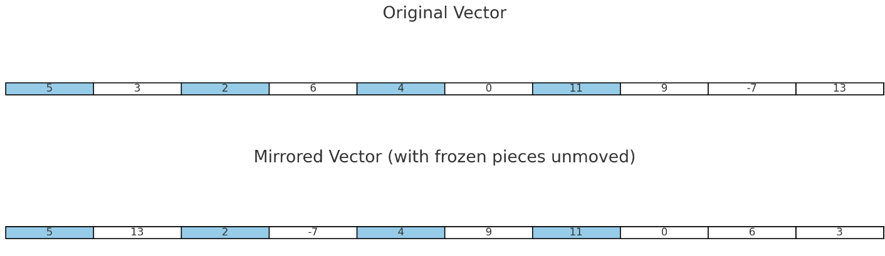

Consider list of integer values representing an image (usually this would be a two-deimensional grid, but for this problem we consider only one dimension). The image is to be reflected by a peculiar kind of mirror: some parts of the mirror are frozen, i.e, these parts are not mirrored but retain their place. When the image is mirrored, all elements in the list are reversed except the elements at the positions corresponding to the frozen parts of the mirror, which retain their original places and are not reversed.
To achieve this peculiar mirrored effect, you need to reverse the contents of the list (the original list in-place, i.e., not using another list in the process) while keeping the elements at the frozen indices unchanged. The frozen indices are provided separately in the input.
Input: image = [5, 3, 2, 6, 4, 0, 11, 9, -7, 13]
frozen indices = [0, 2, 4, 6]
Output: [5, 13, 2, -7, 4, 9, 11, 0, 6, 3]
Explanation: All elements except the ones appearing on frozen indices (shown in blue here) have been reversed in order.
Below is a visual representation of the input and output transformation:
In the visual, the frozen elements (in blue) retain their positions while the rest of the elements are reversed.
Implement the following function stub:
Use the following main to test your function: